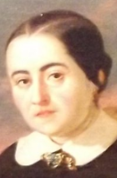

Seudónimo utilizado por Cecilia Böhl de Faber Lavrea
(Morges, Suiza, 24 de diciembre de 1972- Sevilla 7 de abril de 1877).
Cecilia Böhl nació en Suiza y tomó su seudónimo de la población de Fernán Caballero
( Ciudad Real ) . Vivió en Alemania hasta que regresó con su familia a Cádiz en
1813 . Tras su matrimonio en 1816 se mudó a Puerto Rico y tras la muerte de su
esposo , vivió en Hamburgo con su abuela . Años más tarde se mudó nuevamente a El
Puerto de Santa María , dónde volvió a casarse y enviudar . El suicidio de su tercer
esposo le llevó a la pobreza , aunque posteriormente lo duques de Montpensier y la
reina Isaber II la protegieron.
Su obra tiene un carácter costumbrista y se distingue por la defensa de las virtudes
tradicionales, la monarquía y el catolicismo, con tramas ligeras e ingenuas

Fernán Caballero